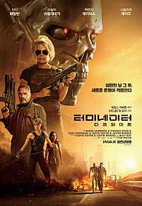

Action
맨 인 블랙 인터내셔널
⭐⭐⭐⭐⭐(5/10)
이제부터 새로운 시작이야! R U READY? 자신의 모습을
감추고 오랜 시간 지구를 위협해 온 외계인을 감시하는
MIB본부. MIB 본부에도 변화가 요구되면서 신입요원
에이전트 M(테사 톰슨)이 영입되고 MIB 에이스 요원
에이전트 H(크리스 헴스워스)가 듀오로 결성 된다! 그들에겐
MIB 내부의 스파이를 찾아야 하는 전대미문의 미션이
주어지는데…
 Action
Action
마녀 Part2
⭐⭐⭐⭐⭐⭐(6.6/10)
통제불능의 존재가 세상 밖으로 나왔다! ’자윤’이 사라진
뒤, 정체불명의 집단의 무차별 습격으로 마녀 프로젝트가
진행되고 있는 ‘아크’가 초토화된다. 그곳에서 홀로
살아남은 ‘소녀’는 생애 처음 세상 밖으로 발을 내딛고
우연히 만난 ‘경희’의 도움으로 농장에서 지내며 따뜻한
일상에 적응해간다. 한편, ‘소녀’가 망실되자 행방을 쫓는
각기 다른 목적을 지닌 세력이 하나 둘 모여들기
시작하면서...

Action
터미네이터 다크페이트
⭐⭐⭐⭐⭐⭐⭐(8.4/10)
심판의 날 그 후, 모든 것이 다시 시작된다! 심판의 날 그
후, 뒤바뀐 미래 새로운 인류의 희망 ‘대니’(나탈리아
레이즈)를 지키기 위해 슈퍼 솔져 ‘그레이스’(맥켄지
데이비스)가 미래에서 찾아오고, ‘대니’를 제거하기 위한
터미네이터 ‘Rev-9’(가브리엘 루나)의 추격이 시작된다.
 Action
Action
탑건 매버릭
⭐⭐⭐⭐⭐⭐⭐⭐⭐(9.8/10)
한순간의 실수도 용납되지 않는 하늘 위, 가장 압도적인
비행이 시작된다! 최고의 파일럿이자 전설적인 인물
매버릭(톰 크루즈)은 자신이 졸업한 훈련학교 교관으로
발탁된다. 그의 명성을 모르던 팀원들은 매버릭의 지시를
무시하지만 실전을 방불케 하는 상공 훈련에서 눈으로 봐도
믿기 힘든 전설적인 조종 실력에 모두가 압도된다.
Action
다이하드4.0
⭐⭐⭐⭐⭐⭐⭐⭐(8.9/10)
전세계를 휩쓸어버릴 디지털 테러와의 전쟁!
7월 4일 미국의 독립기념일, 컴퓨터 해킹 용의자 매튜 패럴(저스틴 롱)을 FBI본부로 호송하던 존 맥클레인.
매튜 패럴의 집으로 들이닥친 괴한들의 총격을 받고 가까스로 목숨을 건진다.정부의 네트워크 전산망을 파괴해 미국을 장악하려는 전 정부요원 토마스 가브리엘이 자신의 계획을 저지할 가능성이 있는 모든 해커들을 죽이는 동시에 미국의 네트워크를..
Action
범죄도시2
⭐⭐⭐⭐⭐⭐⭐⭐⭐(9.4/10)
“느낌 오지? 이 놈 잡아야 하는 거”
가리봉동 소탕작전 후 4년 뒤,
금천서 강력반은 베트남으로 도주한 용의자를 인도받아 오라는 미션을 받는다.
괴물형사 ‘마석도’(마동석)와 ‘전일만’(최귀화) 반장은 현지 용의자에게서 수상함을 느끼고,
그의 뒤에 무자비한 악행을 벌이는 ‘강해상’(손석구)이 있음을 알게 된다.
‘마석도’와 금천서 강력반은 한국과 베트남을 오가며 강해상을 본격적으로 쫒기 시작 하는데..